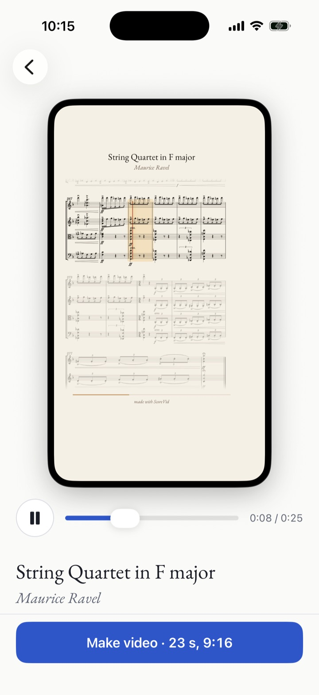

Maj7 Labs
Small, careful software for people who write music. We're starting with ScoreVid.
Say hello: hello@maj7labs.com

Our first app In private testing
ScoreVid
By Composers, For Composers
Turn a MuseScore score into a video that scrolls in time with the music, ready for TikTok, Reels and YouTube Shorts. ScoreVid finds the moment worth posting and plays it with Muse Sounds or your own recording.
- Your own recording lines up with the score on its own, and you can nudge it if you need to.
- Perfect loops, and every note lit up as it sounds, with lyrics that fill in karaoke-style.
- On iPhone and the web, in English, Japanese, Korean, Spanish, Portuguese, French and German.
What's next
Instruments and effects for your DAW. If you'd like to hear when they're ready, or try ScoreVid early, write to hello@maj7labs.com.